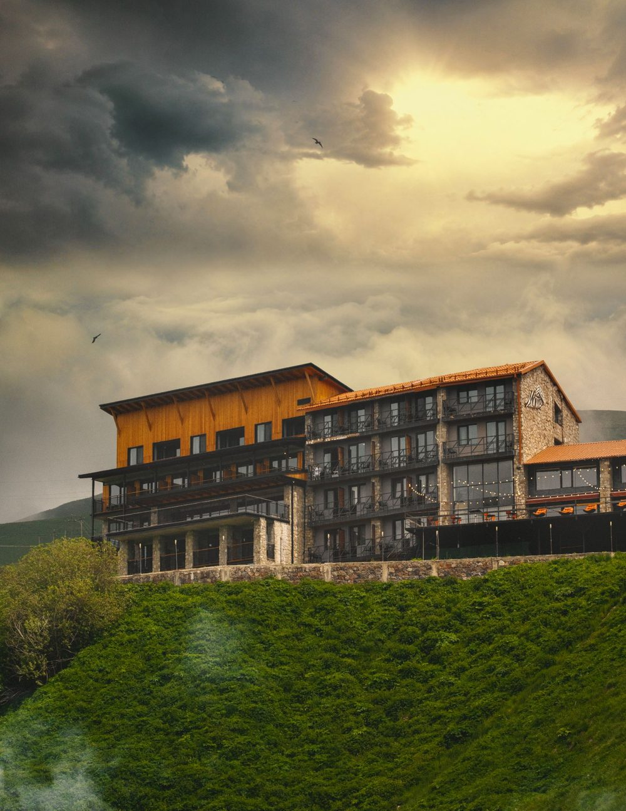
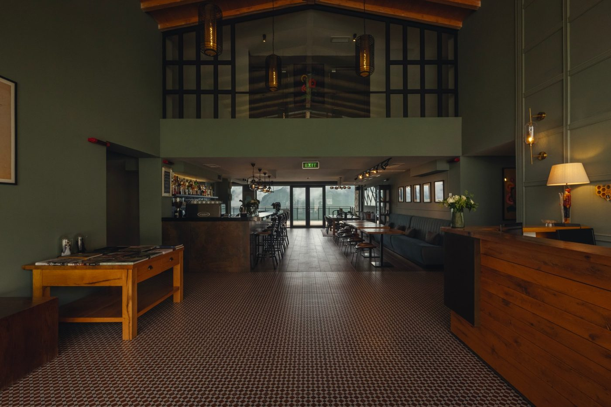
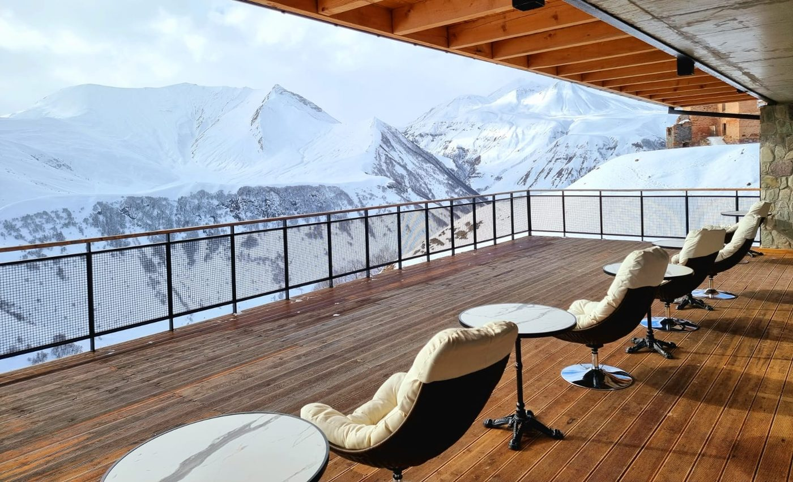

About Monte
Nestled in the heart of Upper Gudauri, Hotel Monte offers a unique blend of modern comfort and genuine Georgian hospitality against the stunning backdrop of the Caucasus Mountains. Since opening in 2015, the hotel has become a favorite destination for travelers seeking both adventure and relaxation in one of Georgia’s premier mountain resorts.
Just a short walk from the ski lifts, Hotel Monte is ideally positioned for winter sports enthusiasts eager to hit the slopes, while also serving as a serene base for summer explorers looking to hike, bike, or simply soak in the natural beauty of the region.

The hotel features a variety of thoughtfully designed rooms—from cozy Standard Doubles perfect for couples, to spacious Family Rooms and luxurious Suites with separate living areas. Every room boasts a private balcony with breathtaking mountain views, inviting guests to start their day with fresh alpine air and stunning scenery. Modern amenities, warm interiors, and comfortable furnishings ensure a restful and memorable stay.
Dining at Hotel Monte is a delight, with a restaurant serving a carefully curated mix of traditional Georgian dishes and European favorites. Guests can enjoy their meals indoors or on the terraces overlooking the mountains, making every bite a scenic experience. The stylish lounge bar, also equipped with a terrace, provides the perfect spot for unwinding with a cocktail while watching the sunset over the peaks.


Beyond accommodations and dining, Hotel Monte offers an array of services to enhance your stay. In winter, a complimentary shuttle runs to the nearby Shino ski lift, and guests can rent ski and snowboard equipment on-site. Throughout the year, visitors can enjoy the sauna, small indoor pool, game room, and mountain bike rentals. For business travelers, the fully equipped conference room supports productive meetings in an inspiring setting.
Hotel Monte is also a sought-after venue for events—whether celebrating New Year’s Eve with festive flair, hosting elegant wedding ceremonies and receptions, or organizing corporate gatherings. With breathtaking views and attentive service, every occasion here is memorable.
Experience the best of Gudauri with a stay at Hotel Monte—where every detail is designed to make your mountain getaway truly special.